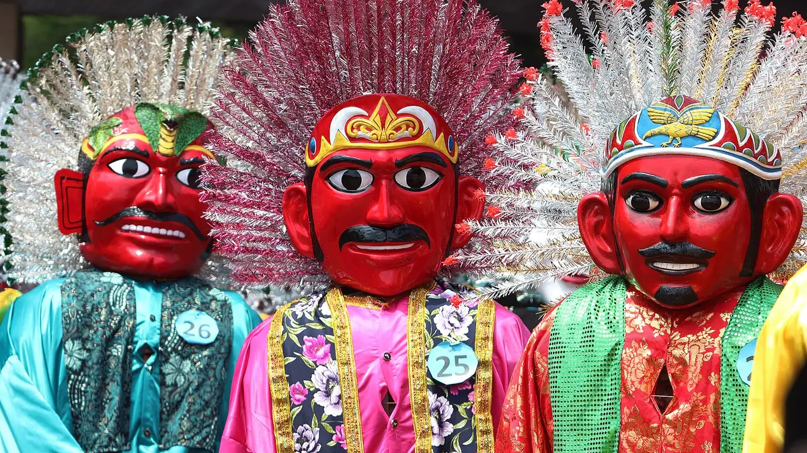
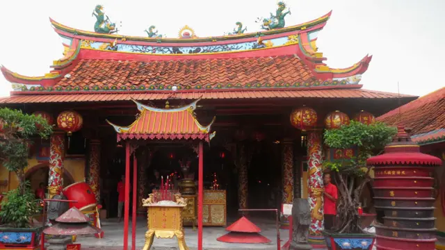
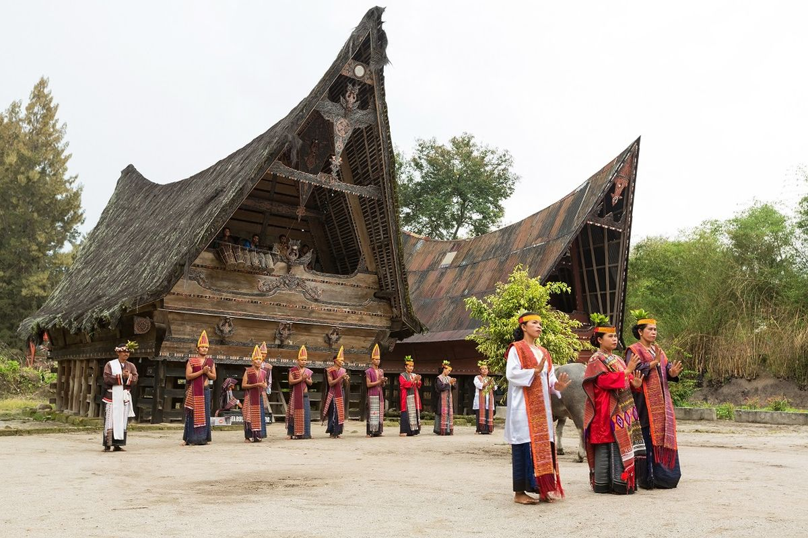

Indonesia merupakan negara yang memiliki banyak keberagaman suku, budaya, bahasa, dan adat istiadat yang menjadi kekayaan bangsa. Namun, seiring perkembangan zaman, banyak budaya daerah yang mulai kurang dikenal oleh generasi muda. Oleh karena itu, kelompok kami melakukan penelitian etnografi terhadap suku Batak, Cina Benteng, dan Betawi untuk memahami lebih dalam mengenai budaya, tradisi, serta kehidupan sosial masyarakatnya. Ketiga suku tersebut dipilih karena memiliki ciri khas dan keunikan budaya yang berbeda satu sama lain. Melalui penelitian ini, kami berharap dapat menambah wawasan tentang keberagaman budaya Indonesia serta menumbuhkan rasa menghargai dan melestarikan budaya daerah agar tetap dikenal dan tidak hilang seiring perkembangan zaman.
Penelitian etnografi ini bertujuan untuk mengetahui dan memahami budaya, tradisi, serta kehidupan sosial masyarakat pada suku Batak, Cina Benteng, dan Betawi. Selain itu, penelitian ini juga bertujuan untuk menambah wawasan mengenai keberagaman budaya Indonesia serta menumbuhkan rasa menghargai dan melestarikan budaya daerah agar tetap dikenal oleh generasi muda dan tidak hilang akibat perkembangan zaman.

Suku Betawi adalah kelompok etnis Austronesia yang merupakan penduduk asli kota Jakarta dan sekitarnya.
Baca Selengkapnya
Masyarakat Cina Benteng adalah keturunan orang Tionghoa yang sudah tinggal di Tangerang sejak sekitar tahun 1407.
Baca Selengkapnya
Suku Batak merupakan salah satu suku terbesar di Indonesia dan masuk ke dalam urutan ketiga setelah Suku Jawa dan Suku Sunda.
Baca Selengkapnya